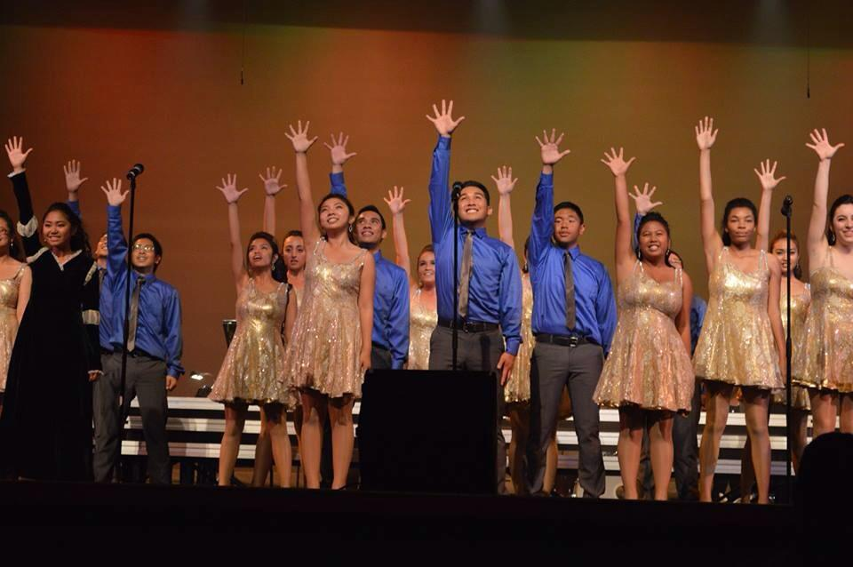
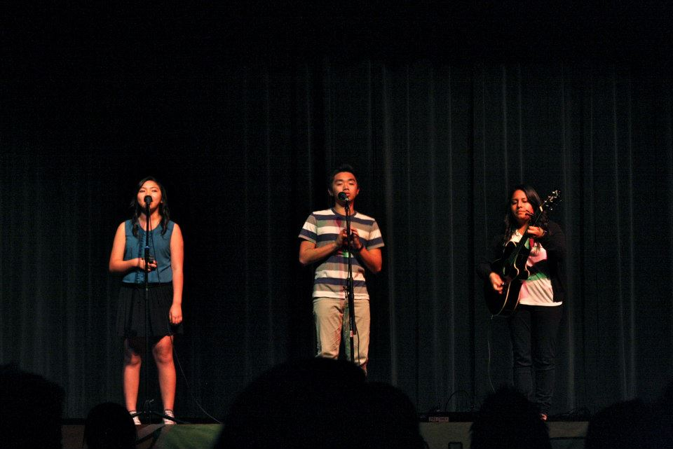

Background
I have loved singing for practically all of my life. My parents are both great singers, and my two siblings and I like to sing and play guitar.
Choir
Joining choir in the seventh grade gave me my first opportunity to sing in front of an audience. I auditioned for and made it into the advanced choir in the eighth grade, where we were invited to sing holiday songs on the local news broadcast.
In high school, I auditioned for my school's show choir, and made it in as the only freshman that year. It was a completely different world, since I had no experience as a dancer, but I quickly got the hang of it as the year progressed. We competed in the yearly show choir competitions, such as Music in the Parks, SoCal Performance Show Choir Invitational, and others.
 Full Effect Show Choir in 2014I became the vice president of our show choir during my Junior year of high school, and eventually became president of the school's Vocal Arts Society during my senior year. I participated in all of the different choirs we had at our school: Jazz choir, Concert choir, Honors choir, and Gospel choir. It was difficult spending all of my time after school at endless choir practices and balancing that on top of school work, but it gave me something to look forward to.
Youtube Covers
I planned on joining a singing club on campus during my freshman year of college, but plans fell through and the club was no longer being created. I missed performing on a stage, so I joined a dance team, but I still missed singing. My friend, Ione, had been making singing covers on Youtube for a few years, and asked me if we wanted to make some together, so we did.
Since Ione lives back at home in San Diego, we do not always have the chance to record and upload covers together, so we don't have too many videos out. I currently have two of my own videos uploaded on my channel (I don't post often), and we used to post all of our collaboration videos on Ione's channel, but we have recently created our own channel together where we'll be posting videos from now on.
Other Performances
In between the typical choir performances and making Youtube covers with Ione, I had done a few other performances (either solo or with a few friends) over the years. I was given the opportunity to open a concert for Youtuber AJ Rafael, alongside three of my friends. I always signed up for open mic nights with friends in high school. I competed in my high school's talent shows.
 Me and my friends, Francis and Leilani, performing in 2012In 2017, Ione and I sent a late submission for the KPOP World Festival competition in LA, and was invited to compete against people all over the city. Although we did not place, it felt great to be singing in front of people again. On my 21st birthday, my friends and I were planning on going out to dinner, so we went to the mall to kill time beforehand. A singing contest was going on, so I decided to join last minute (I didn't even have a song ready), and won second place among 20+ contestants.